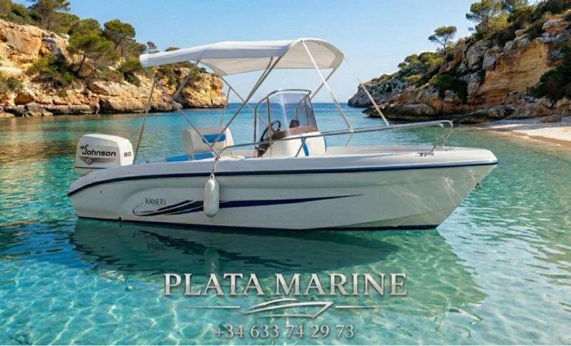
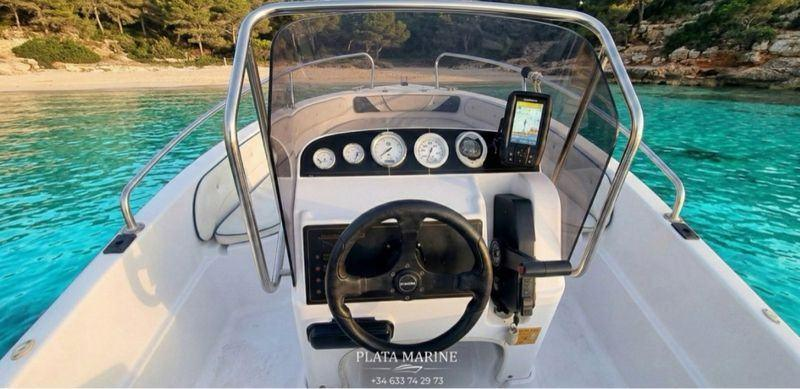
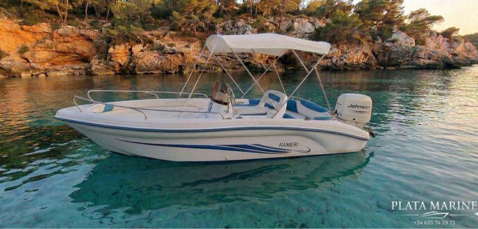

Inicio · Barcos en venta · Ranieri Azzurra 5 m
En gestión
Ranieri Azzurra 5 m
Año 20045,00 m de esloraJohnson 60 cv, 4 tiemposCataluña
11.990 €



- Año
- 2004
- Eslora
- 5,00 m
- Motor
- Johnson 60 cv, 4 tiempos
- Transmisión
- Fueraborda
- Bandera
- Española, lista 7ª
- Ubicación
- Cataluña
- Electrónica
- Sonda
Cómo la veo
Open de 5 metros ideal para paseo, baño y pesca costera. Un barco fácil de manejar, económico de mantener y que se lleva en remolque sin necesidad de amarre.
Motor Johnson de 60 cv de cuatro tiempos, sonda instalada y bimini blanco. Lista para navegar.
El remolque es opcional (1.500 € más). Se puede ver sin compromiso.
Equipamiento: Bimini blanco. Remolque opcional por 1.500 € más.